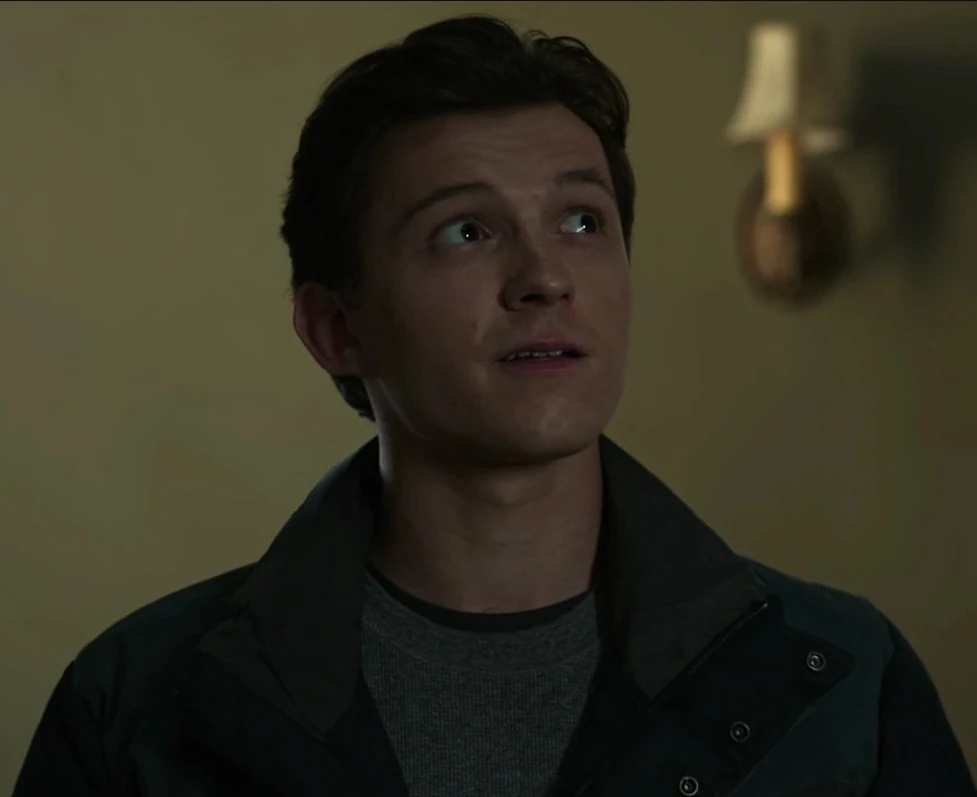

Біографія

Пі́тер Па́ркер (англ. Peter Parker) — персонаж з медіафраншизи Кіновсесвіту Marvel (КВМ), заснований на однойменному персонажі Marvel Comics — широко відомий під його псевдонімом Люди́на-паву́к / Спа́йдермен (англ. Spider-Man). Його роль виконує Том Голланд. Паркер зображений як учень середньої школи Мидтаунської школи науки і техніки, який отримав павукоподібні здібності після того, як його укусив радіоактивний павук, і з тих пір Пітер Паркер таємно діяв як дружелюбний сусід.
Концепція та створення
Том Голланд вперше з'являється як Пітер Паркер у КВМ у фільмі «Капітан Америка: Громадянська війна», де його завербував Тоні Старк, щоб допомогти йому заарештувати Капітана Америку та його Месників. Продюсер Кевін Файґі сказав, що Паркер буде розриватися між ідеологіями супергероїв, сказавши: «Чи хоче він бути схожим на цих інших персонажів? Він не хоче мати нічого спільного з цими іншими персонажами? Як це впливає на його досвід, будучи цим приземленим, але надпотужним героєм? Це все те, з чим грали Стен Лі та Стів Дітко в перші 10 років його коміксів, і з якими тепер ми можемо грати вперше у фільмі».[29] Приєднуючись до Тоні Старка, Ентоні Руссо сказав, що, незважаючи на те, що він вступив у конфлікт після того, як дві фракції сформувались і не мав значних політичних інвестицій, вибір Паркера зумовлений «дуже особистими відносинами», які він розвиває зі Старком.[
Характеристика
Пітер Паркер вперше відбувся як персонаж коміксів в коміксі-антології Amazing Fantasy #15 (серпень 1962 року). Після сплеску підліткового попиту на комікси редактор і головний сценарист Marvel Comics Стен Лі хотів створити персонажа, з яким підлітки могли б ототожнитися.[1] Лі процитував борця зі злочинністю Павука в журналі[2] і заявив, що його надихнуло те, що він побачив, як павук піднявся на стіну, додавши у своїй автобіографії, що він так часто розповідав цю історію, що не впевнений, чи це правда.[3] Лі «хотів, щоб персонаж був дуже людяним хлопцем, тим, хто робить помилки, хто хвилюється, хто отримує прищі, має проблеми зі своєю дівчиною тощо».